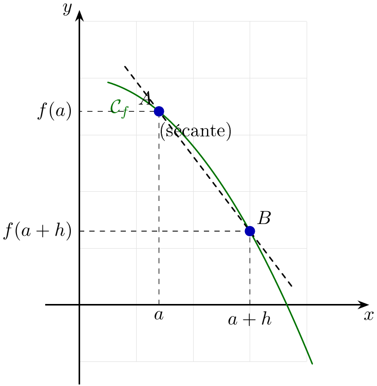
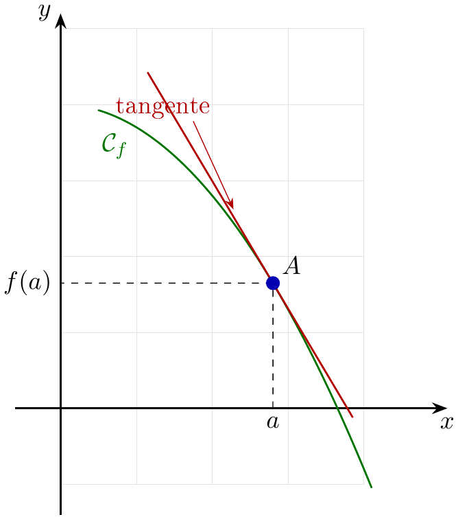
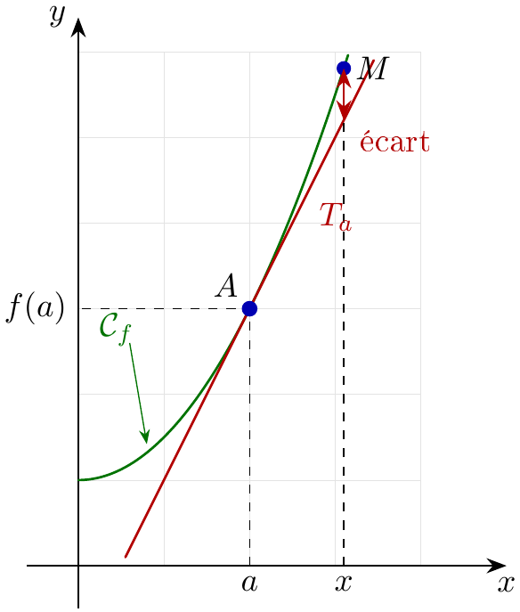

Chapitre 4 : Fonctions — nombre dérivé
Première spécialité · Chapitre 4 — Nombre dérivé · cours de Frederik de Peyrelongue
I. Nombre dérivé
1.1 Taux d'accroissement
Soit $f$ une fonction définie sur un intervalle $I$ de $\R$, $a$ un point de $I$ et $h$ un réel non nul tel que $a+h$ soit dans $I$.
On appelle taux d'accroissement de $f$ entre $a$ et $a+h$ le nombre réel
On le note $\taua[a\,;a+h]$.

Remarque :
- Le taux d'accroissement correspond au coefficient directeur de la sécante $(AB)$.
- Le taux d'accroissement donne la tendance globale de la fonction entre deux points. Si la fonction décrit un déplacement, alors le taux d'accroissement correspond à la vitesse moyenne.
Soit $f(x)=mx+p$. Calculons le taux d'accroissement de la fonction affine sur l'intervalle $[a\,;a+h]$ :
Conclusion : le taux d'accroissement de la fonction affine est constant et correspond au coefficient directeur de la fonction affine.
Soit $f(x)=x^{2}$. Calculons le taux d'accroissement de la fonction carré sur l'intervalle $[a\,;a+h]$ :
Conclusion : le taux d'accroissement de la fonction carré dépend de l'emplacement de l'intervalle. Plus $a$ est grand, plus l'accroissement est fort (logique : la courbe accélère).
Soit $f(x)=x^{2}+2x+1$. Calculer le taux d'accroissement sur l'intervalle $[1\,;1+h]$.
1.2 Nombre dérivé en $a$
Soit $f$ une fonction définie sur un intervalle $I$ de $\R$, $a$ un point de $I$ et $h$ un réel non nul tel que $a+h$ soit dans $I$.
On dit que $f$ est dérivable en $a$ si le taux d'accroissement $\dfrac{f(a+h)-f(a)}{h}$ tend vers un nombre réel lorsque $h$ tend vers $0$. Ce nombre est appelé nombre dérivé de $f$ en $a$ et est noté $f'(a)$.
On écrit alors
Remarque :
- Lorsque $h$ tend vers $0$, le point $B$ se rapproche infiniment de $A$, et la sécante devient la tangente à la courbe $\mathcal{C}_{f}$ au point $A$.
- Le nombre dérivé correspond alors à la pente de la tangente en $A$ à la courbe.
Soit $f(x)=mx+p$ : calculons le nombre dérivé de la fonction affine en $a$.
1) Il faut d'abord calculer le taux d'accroissement sur $[a\,;a+h]$ :
2) On calcule la limite quand $h$ se rapproche de zéro :
Le nombre dérivé $f'(a)$ de la fonction affine est indépendant de $a$ : il est toujours égal au coefficient directeur.
Soit $f(x)=x^{2}$ : calculons le nombre dérivé de la fonction carré en $a$.
1) Il faut d'abord calculer le taux d'accroissement sur $[a\,;a+h]$ :
2) On calcule la limite du taux d'accroissement quand $h$ se rapproche de zéro :
Conclusion : le nombre dérivé de la fonction carré dépend de $a$. Plus $a$ est grand, plus le nombre dérivé est grand (logique : la courbe accélère).
II. Tangente à une courbe en un point
Soit $a$ un réel et $f$ une fonction dérivable en $a$. On appelle tangente à la courbe représentative de $f$ au point $A$ d'abscisse $a$ la droite passant par le point de coordonnées $(a\,;f(a))$ et de coefficient directeur $f'(a)$.

Équation de la tangente :
L'équation de la droite tangente à $\mathcal{C}_{f}$ au point $A$ est :
III. Approximation affine
3.1 L'idée : remplacer la courbe par sa tangente
Soit $f$ une fonction dérivable en un réel $a$ et soit $\mathcal{C}_{f}$ sa courbe représentative. Au voisinage du point $A\bigl(a\,;f(a)\bigr)$, la tangente $T_{a}$ à $\mathcal{C}_{f}$ en $A$ et la courbe $\mathcal{C}_{f}$ sont très proches l'une de l'autre.
On dit que la fonction affine
est l'approximation affine de $f$ au voisinage de $a$, et que c'est la meilleure approximation affine de $f$ près de $a$.
Autrement dit, pour $x$ proche de $a$ :
La fonction $p$ est la fonction affine dont la droite représentative est la tangente $T_{a}$ : on a bien $p(a)=f(a)$ (la tangente passe par $A$) et $p'(x)=f'(a)$ pour tout $x$ (la tangente a pour coefficient directeur $f'(a)$).

Remarque :
- L'approximation n'est valable que localement, c'est-à-dire au voisinage de $a$ : l'écart entre la courbe et la tangente augmente lorsqu'on s'éloigne du point $A$.
- Remplacer $f$ par $p$, c'est remplacer localement la courbe par sa tangente : c'est le principe des approximations utilisées en physique pour « linéariser » une grandeur au voisinage d'une valeur.
3.2 Exemple : $f(x)=x^{2}$ au voisinage de $a=1$
Soit $f$ la fonction définie sur $\R$ par $f(x)=x^{2}$.
1) On calcule $f(1)$ et $f'(1)$ :
2) L'équation de la tangente en $A(1\,;1)$ est donc
3) Pour $x$ proche de $1$, on a donc
4) L'écart entre la courbe et la tangente se calcule exactement :
| $x$ | $0{,}9$ | $1$ | $1{,}1$ | $1{,}2$ | $1{,}5$ | $2$ |
| $f(x)=x^{2}$ | $0{,}81$ | $1$ | $1{,}21$ | $1{,}44$ | $2{,}25$ | $4$ |
| $2x-1$ | $0{,}8$ | $1$ | $1{,}2$ | $1{,}4$ | $2$ | $3$ |
| écart $(x-1)^{2}$ | $0{,}01$ | $0$ | $0{,}01$ | $0{,}04$ | $0{,}25$ | $1$ |
L'écart est très petit lorsque $x$ est proche de $1$ (il vaut $0{,}01$ pour $x=1{,}1$), puis devient important lorsqu'on s'éloigne : pour $x=2$, la tangente annonce $3$ alors que $f(2)=4$.
3.3 Application : estimer une valeur sans calculatrice
On cherche une valeur approchée de $\sqrt{4{,}1}$ sans calculatrice. On considère la fonction $f(x)=\sqrt{x}$ sur $[0\,;+\infty[$ et le réel $a=4$, proche de $4{,}1$ et dont la racine est connue.
1) $f(4)=\sqrt{4}=2$ et, pour $x>0$, $f'(x)=\dfrac{1}{2\sqrt{x}}$, donc
2) La tangente en $A(4\,;2)$ a pour équation
3) Pour $x=4{,}1$, l'approximation affine donne
4) La calculatrice donne $\sqrt{4{,}1}\approx 2{,}024\,845\,7$. L'erreur commise est donc
soit une erreur relative inférieure à $0{,}01\,\%$ : l'estimation est excellente.
Remarque : de la même façon, avec la fonction carré au voisinage de $1$, on obtient $1{,}02^{2}\approx 2\times 1{,}02-1=1{,}04$, alors que $1{,}02^{2}=1{,}0404$ : l'erreur commise n'est que de $0{,}0004$.
3.4 Erreur d'approximation et fonction $\varepsilon$
Soit $f$ une fonction dérivable en $a$. Pour tout réel $x$ de l'intervalle de définition de $f$ tel que $x\neq a$, on pose
Comme $f'(a)=\lim_{x\to a}\dfrac{f(x)-f(a)}{x-a}$, on a
On peut alors écrire l'égalité exacte, valable pour tout $x\neq a$ :
Le terme $(x-a)\,\varepsilon(x)$ est l'erreur d'approximation commise lorsque l'on remplace $f(x)$ par $f'(a)(x-a)+f(a)$. C'est le produit de deux quantités qui tendent vers $0$ lorsque $x$ tend vers $a$ : il est donc très petit dès que $x$ est proche de $a$.
De plus,
l'erreur est négligeable devant $x-a$. On dit que l'approximation affine est une approximation au premier ordre.
L'écriture $f(x)\approx f'(a)(x-a)+f(a)$ est une notation simplifiée : elle sous-entend que l'on néglige le terme $(x-a)\,\varepsilon(x)$. L'égalité avec $\varepsilon(x)$ est, elle, rigoureusement exacte : elle ne fait que traduire la définition de $f'(a)$ comme limite du taux d'accroissement.
Pourquoi « meilleure » approximation ? Si une fonction affine $q(x)=mx+k$ vérifiait elle aussi $f(x)-q(x)=(x-a)\,\varepsilon_{1}(x)$ avec $\lim_{x\to a}\varepsilon_{1}(x)=0$, alors en divisant par $x-a$ et en faisant tendre $x$ vers $a$, on obtiendrait $q(a)=f(a)$ puis $m=f'(a)$ : la fonction $q$ serait donc $p$. La tangente est ainsi la seule droite qui « colle » à la courbe au premier ordre au voisinage de $A$.
Reprenons $f(x)=x^{2}$ et $a=1$, dont l'approximation affine est $2x-1$. Pour $x\neq 1$,
et l'on a bien $\lim_{x\to 1}\varepsilon(x)=0$. On retrouve l'égalité exacte
IV. Dérivation sur un intervalle – fonction dérivée
4.1 Définition
Soit $f$ une fonction définie sur un intervalle $I$ de $\R$. Si, pour tout $a$ de $I$, $f$ est dérivable en $a$, on dit que $f$ est dérivable sur $I$.
La fonction qui, à tout $x$ de $I$, associe le nombre dérivé de $f$ sur $x$, est appelée fonction dérivée de $f$ et est notée $f'$.
4.2 Exemples
a) Fonction dérivée de la fonction constante $f(x)=k$
Soit $x$ un nombre réel quelconque.
Le taux d'accroissement entre $x$ et $x+h$ est
Le taux d'accroissement de la fonction constante entre $x$ et $x+h$ est nul quel que soit $h$, et donc notamment quand $h$ devient très petit, il reste nul.
Donc $f'(x)=0$ pour tout $x$ réel.
La fonction dérivée de la fonction constante est donc nulle.
b) Fonction dérivée de la fonction affine $f(x)=mx+p$
Soit $a$ un nombre réel quelconque.
Le taux d'accroissement entre $a$ et $a+h$ est :
Le taux d'accroissement de la fonction affine entre $a$ et $a+h$ est égal au coefficient directeur $m$, quelle que soit la valeur de $h$, et donc notamment quand $h$ devient très petit, il reste constant égal à $m$.
La limite du taux d'accroissement de la fonction affine en « $a$ » existe : le nombre dérivé est donc défini, et pour tout nombre réel $a$, $f'(a)=m$.
La fonction affine est dérivable sur $\R$ et sa fonction dérivée est $f'(x)=m$.
c) Fonction dérivée de la fonction carré $f(x)=x^{2}$
Soit $a$ un nombre réel quelconque et $h>0$.
Le taux d'accroissement entre $a$ et $a+h$ est :
La limite du taux d'accroissement de la fonction carré en « $a$ » existe : le nombre dérivé est donc défini, et pour tout nombre réel $a$, $f'(a)=2a$.
La fonction carré est dérivable sur $\R$ et sa fonction dérivée est $f'(x)=2x$.
d) Fonction dérivée de la fonction inverse $f(x)=\dfrac{1}{x}$
La fonction inverse est définie sur $\R^{*}$.
Soit $a\in\R^{*}$ et $h$ un nombre réel strictement positif.
Le taux d'accroissement entre $a$ et $a+h$ est :
La limite du taux d'accroissement de la fonction inverse en « $a$ » existe : le nombre dérivé est donc défini, et pour tout nombre réel non nul $a$,
La fonction inverse est dérivable sur $\R^{*}$ et sa fonction dérivée est
e) Fonction dérivée de la fonction racine carrée $f(x)=\sqrt{x}$
La fonction racine carrée est définie sur $\R^{+}$.
Soit $a\in\R^{+}$ et $h$ un nombre réel strictement positif.
Le taux d'accroissement entre $a$ et $a+h$ est :
1er cas : $a=0$.
alors la limite du taux d'accroissement en $0$ n'existe pas.
Donc le nombre dérivé $f'(0)$ n'est pas défini : la fonction racine carrée n'est pas dérivable en $0$.
Remarque :
La représentation graphique de la fonction racine carrée a néanmoins une tangente en $0$, qui est verticale !
2ème cas : $a>0$.
La limite du taux d'accroissement de la fonction racine carrée en « $a>0$ » existe. Le nombre dérivé est donc défini, et pour tout nombre réel non nul $a$,
La fonction racine carrée est dérivable sur $\R^{+\,*}$ et sa fonction dérivée est
4.3 Fonctions dérivées des fonctions usuelles
| Fonction $f$ définie par : | Ensemble de définition $\mathcal{D}_{f}$ | Fonction dérivée $f'$ définie par : | Ensemble de dérivabilité $\mathcal{D}_{f'}$ | |
| 1. | $f(x)=k$, avec $k\in\R$ | $\R$ | $f'(x)=0$ | $\R$ |
| 2. | $f(x)=mx+p$, avec $m$ et $p$ réels | $\R$ | $f'(x)=m$ | $\R$ |
| 3. | $f(x)=x^{2}$ | $\R$ | $f'(x)=2x$ | $\R$ |
| 4. | $f(x)=x^{n}$, avec $n\in\N^{*}$ | $\R$ | $f'(x)=nx^{n-1}$ | $\R$ |
| 5. | $f(x)=\dfrac{1}{x}$ | $\R\setminus\{0\}$ | $f'(x)=-\dfrac{1}{x^{2}}$ | $\R\setminus\{0\}$ |
| 6. | $f(x)=\dfrac{1}{x^{n}}$ avec $n\in\N^{*}$ | $\R\setminus\{0\}$ | $f'(x)=-\dfrac{n}{x^{n+1}}$ | $\R\setminus\{0\}$ |
| 7. | $f(x)=\sqrt{x}$ | $[0\,;+\infty[$ | $f'(x)=\dfrac{1}{2\sqrt{x}}$ | $]0\,;+\infty[$ |
V. Opérations sur les fonctions dérivables
| Type d'opération | Fonction à dériver | Fonction dérivée | |
| 1. | Dérivée d'une somme | $u+v$ | $(u+v)'=u'+v'$ |
| 2. | Dérivée d'un produit par une constante | $k\times u$ | $(k\times u)'=k\times u'$ |
| 3. | Dérivée d'un produit | $u\times v$ | $(u\times v)'=u'\times v+u\times v'$ |
| 4. | Dérivée d'un inverse | $\dfrac{1}{v}$ avec $v(x)\neq 0$ pour tout $x\in I$ | $\left(\dfrac{1}{v}\right)'=\dfrac{-v'}{v^{2}}$ |
| 5. | Dérivée d'un quotient | $\dfrac{u}{v}$ avec $v(x)\neq 0$ pour tout $x\in I$ | $\left(\dfrac{u}{v}\right)'=\dfrac{u'\times v-u\times v'}{v^{2}}$ |
| 6. | Dérivée de $f(x)=g(ax+b)$, avec $a\neq 0$ : soit $I$ l'intervalle tel que, pour tout $x\in I$, $ax+b\in J$. La fonction $f$ est définie et dérivable sur $J$ et $f'(x)=a\times g'(ax+b)$. |
5.1 Produit d'une fonction dérivable par une constante
Si $u$ est une fonction dérivable sur un intervalle $I$ de $\R$, et $k$ une constante, alors $k\,u$ est dérivable sur $I$ et
Preuve :
Soit $f$ la fonction définie sur $\R$ par $f(x)=3x^{7}$.
La fonction $f$ est sous la forme $k\,u$ avec $u(x)=x^{7}$ et $k=3$.
La fonction $u$ est dérivable sur $\R$, avec $u'(x)=7x^{6}$.
Donc $f$ est dérivable sur $\R$ et $f'(x)=21x^{6}$.
5.2 Somme de deux fonctions dérivables
Si $u$ et $v$ sont deux fonctions dérivables sur un même intervalle $I$ de $\R$, alors $f=u+v$ est dérivable sur $I$ et
Preuve :
Soit $f$ la fonction définie sur $\R^{*}$ par $f(x)=x^{2}+\dfrac{1}{x}$.
La fonction $f$ est sous la forme $u+v$ avec $u=x^{2}$ et $v=\dfrac{1}{x}$. Les fonctions $u$ et $v$ sont dérivables sur $\R$ et $\R^{*}$, avec $u'=2x$ et $v'=-\dfrac{1}{x^{2}}$.
Donc $f$ est dérivable sur $\R^{*}$ et
5.3 Produit de deux fonctions dérivables
Si $u$ et $v$ sont deux fonctions dérivables sur un même intervalle $I$ de $\R$, alors $u\,v$ est dérivable sur $I$ et
Preuve :
Soit $f$ la fonction définie sur $\R$ par $f(x)=x^{2}(x+5)$.
La fonction $f$ est sous la forme $u\,v$ avec $u=x^{2}$ et $v=x+5$. Les fonctions $u$ et $v$ sont dérivables sur $\R$, avec $u'=2x$ et $v'=1$.
Donc $f$ est dérivable sur $\R$ et
Remarque : attention, la dérivée d'un produit n'est jamais le produit des dérivées !
5.4 Inverse d'une fonction dérivable
Si $u$ est une fonction dérivable sur un même intervalle $I$ de $\R$, et si, pour tout $x$ de $I$, $u(x)\neq 0$, alors $\dfrac{1}{u}$ est dérivable sur $I$ et
Soit $f$ la fonction définie sur $\left]-1\,;1\right[$ par $f(x)=\dfrac{1}{1-x^{2}}$.
La fonction $f$ est sous la forme $\dfrac{1}{u}$ avec $u=1-x^{2}$. La fonction $u$ est dérivable et ne s'annule pas sur $\left]-1\,;1\right[$, avec $u'=-2x$.
Donc $f$ est dérivable sur $\left]-1\,;1\right[$ et
5.5 Quotient de deux fonctions dérivables
Si $u$ et $v$ sont deux fonctions dérivables sur un même intervalle $I$ de $\R$, et si $v$ ne s'annule pas sur $I$, alors $\dfrac{u}{v}$ est dérivable sur $I$ et
Preuve :
Soit $f$ la fonction définie sur $\R$ par $f(x)=\dfrac{2x+3}{1+x^{2}}$.
La fonction $f$ est sous la forme $\dfrac{u}{v}$ avec $u=2x+3$ et $v=1+x^{2}$. Les fonctions $u$ et $v$ sont dérivables sur $\R$, avec $u'=2$ et $v'=2x$.
Donc $f$ est dérivable sur $\R$ et